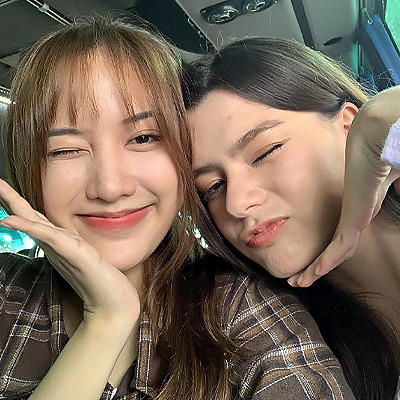

CGC

Career Objective
To work in a dynamic professional environment with a growing organization
and utilize my creativity and innovative thinking for benefit of the
organization and myself.
Technical Skills
-
Basic Knowledge in C, PHP, and MySQL, Springboot, Java Database
Connectivity, Junit, JavaScript HTML, CSS, Sencha ExtJS, and GitHub:
⭐️⭐️⭐️⭐️
- Competent Knowledge in Java, C# & ASP.NET Web API : ⭐️⭐️⭐️
- Hardware troubleshooting: ⭐️⭐️⭐️
- Basic Software and Network troubleshooting: ⭐️⭐️⭐️
- Adobe Creative Suite (Photoshop): ⭐️⭐️⭐️
- Microsoft Office (MS Word, Excel, Powerpoint, Excel): ⭐️⭐️⭐️
Personal Skills
- Excellent written and verbal communication skills
- Highly organized and efficient
-
Effective time management – can solve complex problems in minimum time
- Ability to work independently and as part of a team
- Fast learner and enjoy new challenges
Education
-
Bachelor of Science in Information Technology
Cavite State University (Carmona Campus)
College Graduate
A.Y. 2017 - 2022
-
Diploma in Information Communication Technology
Polytechnic University of the Philippines (Biñan Campus)
A.Y 2016 - 2017
Work Experience
COMPUTING INC
Junior Application Specialist (July 2023 -
Current)
-
Providing technical support and training to users of the software
-
Collaborating with the delivery team and clients to understand the
requirements and priorities
-
Diagnosing and troubleshooting technical issues and escalating them
when necessary
-
Creating and maintaining documentation for the software products
-
Setting technical direction and ensuring adherence to IT standards and
best practice
Others